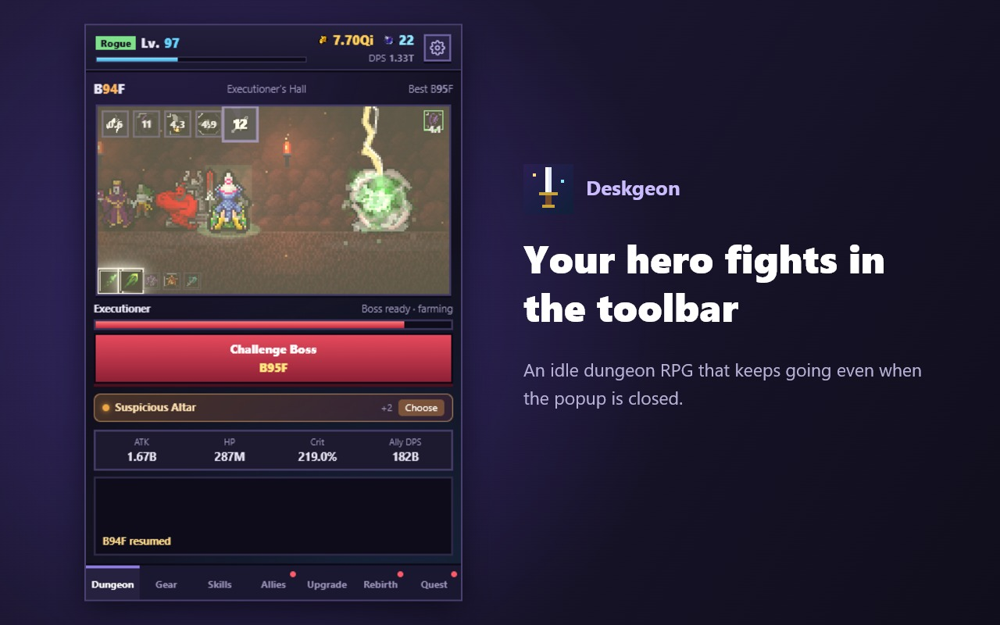

한 사람이 정하고,
에이전트 팀이 함께 만듭니다.
AnYoo는 게임과 작은 도구를 만드는 1인 스튜디오입니다. 방향과 결정은 사람이 내리고, 구현·검토·문서는 역할을 나눈 AI 에이전트들이 맡습니다. 여기에는 결과물과 함께 그것을 만든 과정을 케이스 파일로 남깁니다.
프로젝트
3 cases
Story of Velarkh
2D 픽셀아트 턴제 전술 RPG. 작은 마을 헤르덴에서 시작하는 1장을 사람이 끝까지 즐길 수 있게 다듬는 중입니다.

Deskgeon 데스크던전
브라우저 툴바에 사는 도트 용사가, 일하는 동안에도 던전을 한 층씩 내려가는 방치형 RPG입니다.
AGENT TEAM
에이전트 팀 운영기
로컬 관제 서버 Paperclip에 Claude와 Codex 에이전트를 묶어 티켓으로 일을 나눈 기록. 잘 된 것과 막힌 것을 함께 적었습니다.
작업 방식
how we work- 사람이 정한다
무엇을 만들지, 어떤 결정을 확정할지는 사람이 정하고 날짜와 함께 설계서에 적습니다.
- 조율자가 쪼갠다
조율 에이전트가 일을 작은 티켓으로 나누고, 완료 기준과 확인 방법을 적어 배정합니다.
- 구현과 검토를 나눈다
구현한 에이전트와 검토하는 에이전트를 따로 둡니다. 자기 결과를 스스로 통과시키지 않습니다.
- 못 한 검사는 적는다
자동 검사가 대신할 수 없는 화면·소리·사람의 플레이는 「아직 안 함」으로 남깁니다.
자주 묻는 질문
FAQ정말 혼자 만드나요?
사람은 한 명입니다. 대신 역할을 나눈 AI 에이전트 여럿이 구현·검토·문서 작업을 나눠 맡습니다. 기획의 방향, 설계 확정, 공개 여부 같은 결정은 사람이 합니다.
AI가 만든 결과물을 그대로 쓰나요?
아니요. 구현한 에이전트와 다른 에이전트가 먼저 검토하고, 조율자가 화면을 직접 캡처해 확인한 뒤에 받아들입니다. 아트 후보도 사람이 승인하기 전에는 게임에 넣지 않습니다.
케이스 파일은 무엇인가요?
프로젝트마다 무엇을 정했고, 어떻게 나눠 만들었고, 어디서 막혔는지를 적은 작업 기록입니다. 잘 된 결과만이 아니라 실패한 시도와 고친 방법도 남깁니다.
Story of Velarkh는 언제 해 볼 수 있나요?
지금은 1장의 자동 검사를 마치고 사람이 직접 처음부터 끝까지 플레이해 보는 단계입니다. 공개 일정이 정해지면 이 페이지에 먼저 알립니다.
이 사이트는 어떻게 만들었나요?
빌드 도구 없이 HTML과 CSS만으로 만들었습니다. 이 사이트도 에이전트가 초안을 쓰고 사람이 고쳤습니다.